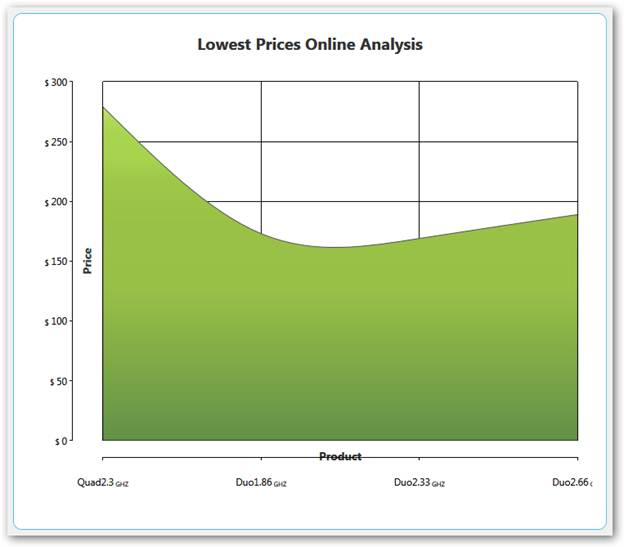
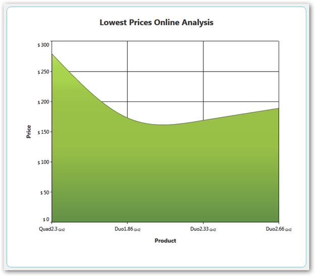
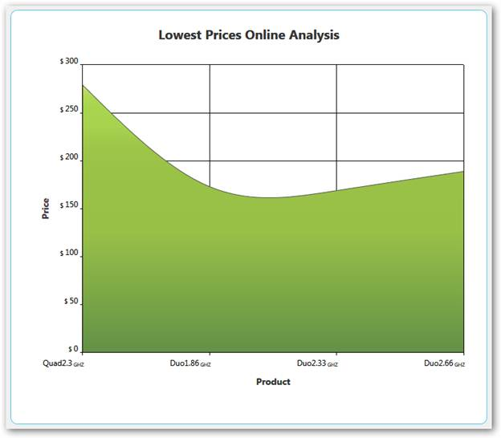

Essential Chart provides support for some improvements in the existing chart axis by implementing the following features.
· Axis headers can be positioned inside, outside, or across the chart axes.
· Edge labels can be adjusted by setting EdgeLabelsDrawingMode to Fit to avoid the partial appearance of edge axis labels.
· Prefixes and suffixes can be added to chart axes labels to mention the units along with the labels.
· Labels can be aligned horizontally and vertically with respect to the specified width and height of chart axis labels.
Properties
|
Property |
Description |
Type |
Data Type |
|
HeaderPosition |
Specifies the position of the header with respect to the chart axis. Inside—Header is positioned inside the chart axis. Outside—Header is positioned outside the chart axis. Cross—Header is positioned across the chart axis. |
Dependency |
AxisPositions |
|
LabelHeight |
Specifies the height of axis labels |
Dependency |
double
|
|
LabelWidth |
Specifies the width of axis labels |
Dependency |
double |
|
LabelHorizontalAlignment |
Aligns the labels horizontally within the specified width of the labels. |
Dependency |
HorizontalAlignment |
|
LabelVerticalAlignment |
Aligns the labels horizontally within the specified width of the labels. |
Dependency |
VerticalAlignment |
|
LabelsPrefix |
Specifies the prefix for chart axis labels. |
Dependency |
DataTemplate |
|
LabelsPostfix |
Specifies the suffix for chart axis labels. |
Dependency |
DataTemplate |
|
EdgeLabelsDrawingMode |
Fit—Draws the edge labels to fit within the chart area |
Dependency |
EdgeLabelsDrawingMode |
Sample Link
To access the chart axis improvement demo:
1. Open the Syncfusion Dashboard.
2. Select User Interface.
3. Click the WPF drop-down list and select Explore Samples.
4. Browse to the path Chart.WPF\Samples\3.5\ WindowsSamples\Chart Axis\Chart Axis Improvement Demo.
Adding Axis Improvement properties to an Application
|
[XAML] <syncfusion:ChartAxis HeaderPosition="Cross" LabelHeight="40" LabelWidth="120" LabelsPrefix="{StaticResource yPrefix}" LabelsPostfix="{StaticResource yPostfix}" LabelHorizontalAlignment="Left" LabelVerticalAlignment="Top" EdgeLabelsDrawingMode="Fit"> </syncfusion:ChartAxis>
|
|
[C#] this.primaryAxis.HeaderPosition = AxisPositions.Cross; this.primaryAxis.LabelHeight = 40; this.primaryAxis.LabelWidth = 120; this.primaryAxis.LabelHorizontalAlignment = HorizontalAlignment.Left; this.primaryAxis.LabelVerticalAlignment = VerticalAlignment.Top; this.primaryAxis.LabelsPrefix = xPrefix; this.primaryAxis.LabelsPostfix = xPostfix; this.primaryAxis.EdgeLabelsDrawingMode = EdgeLabelsDrawingMode.Fit;
|

Figure 204: Primary Axis HeaderPosition [Across] and Secondary Axis HeaderPosition [Inside] &
Primary Axis Labels with Postfix (GHZ) and Secondary Axis Labels withPrefix ($)

Figure 205: Primary Axis EdgeLabelsDrawingMode [Fit] and
Secondary Axis EdgeLabelsDrawingMode [Shift]

Figure 206: Primary Axis LabelWidth [120], LabelHorizontalAlignment [Left] and
Secondary Axis LabelHeight [30], LabelVerticalAlignment [Top]